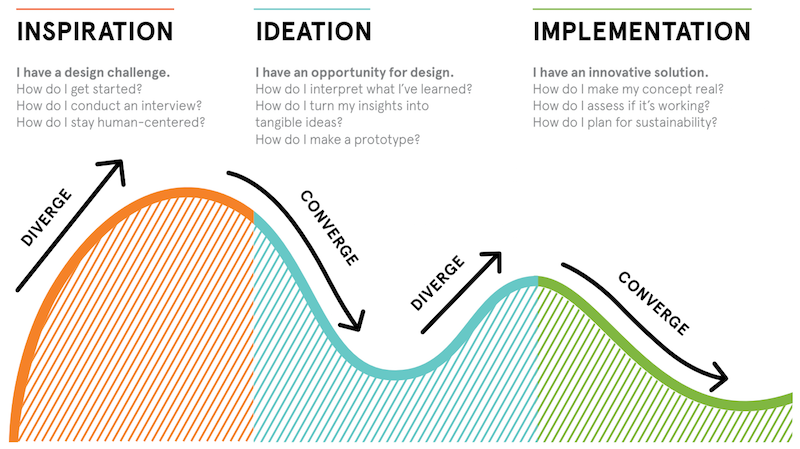

We're all about the process.
Our creative approach to the human-centered design process is what makes us Berkeley Innovation. We thus thrive at the intersection of desirability, viability, and feasibility.
Design thinking
is ahuman-centered
approach toinnovation
that draws from the designer’s toolkit to integrate theneeds of people
, the possibilities of technology, and the requirements forbusiness success
.”- Tim Brown, CEO of IDEO
Inspiration
Ideation
Implementation
Although designers do not always work through each of the three phases linearly, the human-centered design process generally begins with the inspiration phase. A problem or opportunity motivates people to search for solutions, and the process begins when a set of mental constraints gives a team a framework to work to begin with.
Once constraints are laid down, designers begin to discover what people’s needs are. A good starting point is for designers to go out into the world and observe the actual experiences of their user, whether it be college students, farmers, or grocery shoppers. Traditional methods of research, such as focus groups and surveys, tend to yield biased results that tend to confirm what is already known.
The second phase is ideation, where our designers begin to synthesize their research which can lead to solutions and opportunities for change. During this process, divergent thinking is encouraged, where quantity of ideas takes precedence over quality. This is supported by having a diverse group of people and a multidisciplinary team from all disciplines.
To work in an interdisciplinary environment, “T-shaped” people are valued where an individual has strengths in two dimensions. On the vertical axis and stem of a “T”, every team member possesses some depth of skill to make tangible contributions to a goal. However, the top of the “T” is where designers are made, and empathy for others’ disciplines allows for deep collaboration and cross-pollination of ideas.
The third phase of the design thinking process is implementation, when the best ideas from ideation are turned into a concrete plan. The core of implementation is prototyping, or turning ideas into actual products that can be tested, iterated, and refined. Prototyping is particularly important for products and services when validating a component of a product, graphics on a screen, or details in interactions. After prototyping, a design team helps create a communication strategy based on storytelling.
Summarizing the three steps above, we result in the following graph:
Want to learn more about the human-centered design process? Take our {design.} DeCal